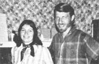
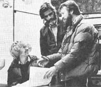

In celebration of little-known MOTHER-type folks from all over.
You wouldn't think that a health food store located on a winding dirt road in Ozark farm country could make a go of it. And not thinking that is exactly how Dan and Paulette Wohnoutka have proved that such a venture can suc ceed.
Three years ago, the Wohnoutkas and their three children moved from California to an 80acre Missouri farm ... with no intention whatsoever of starting a business. Dan and Paulette, however, discovered that the nearest store selling organically grown grains and herbs and other health foods (which they were used to eating) was over an hour's drive away.
One day, in the company of a friend, Paulette wished out loud: "Someone should start a health food store around here ... someone who would charge reasonable prices for their products."
"Why don't you?" her friend challenged.
That did it! "That 'someone' is us!" declared the Ozark couple.
The Wohnoutkas slowly managed to raise some money, buy their stock, and convert a guest house a few feet from their home into a wellsupplied health food shop-New Life Natural Foodsthat has all the flavor of an "old-time" general store (from the handmade shelves to the wood-burning stove).
New Life Natural Foods is now over a year old ... and Dan and Paulette have already realized a small profit. But the benefits clearly do not stop there. Having a family-run, homestead-based business allows Paulette and Dan to spend more time with their children, work on their farm, and take odd jobs. Also, without the overhead of a storefront in town, the Wohnoutkas are able to charge those lower prices they had once dreamed about.
Most folks wouldn't think it'd be possible to make a living selling health foods on a rural road in the Ozarks. But clearly, Dan and Paulette Wohnoutka aren't like most folks! - Edna L. Ryneveld.
Three years ago-when the solid waste management problem in Calaveras County, California reached the "saturation point"?the installation of a county sewage system (with all its attendant expenses and environmental problems) seemed inevitable. Local officials-at that time-knew little about composting toilets and were (to put it mildly) skeptical about their use.
All that's changed now, however, thanks to Domestic Environmental Alternatives, a dry-toilet contracting firm headed up by Jan and Mike Skenfield and licensed plumber Tom Scheller.
Working in cooperation with Calaveras County health officials, Jan and Mike and Tom haveover the past three years-installed waterless, composting toilets on an experimental basis in several Calaveras County homes. In the process, they've managed to convince homeowners and health officials alike that total water conservation (via on-site waste disposal) is a viable long-term goal.
One of the many myths that DEA has had to deal with over the past three years is the idea that dry toilets are (like outhouse-type pit toilets) smelly. Mike Skenfield is quick to point out that, in fact, a well-designed, aerobic (functioning in the presence of air) commode has such a strong seat downdraft that no odors can ever escape. Mike proves his point by lighting a match over an open seat, whereupon the smoke is actually pulled down into the commode. "I've seen this a hundred times," Mike says, demonstrating. "And still I'm amazed at it. Just look at that flame!"
Calaveras County may someday need the large, water-wasteful sewage system envisioned by local health officials three years ago. Thus far, howeverperhaps due in part to the efforts of DEA?such a system hasn't been necessary. It'll never be necessary, if Jan and Mike Skenfield and Tom Scheller have anything to say about it! - Cathy Bauer.
Henry Mee's love affair with mushrooms goes back a long way ... all the way to his teens, in fact, when (heeding his father's advice) Henry began to seek better ways to grow edible fungi. What began as a hobby, however, has since grown to become a fullfledged career.
In 1964, Henry earned his Ph.D. in plant pathology at the University of Wisconsin, where he met his wife, Miyoko. Dr. Mee's new bride encouraged her husband in his research efforts and hoped he might one day be able to grow the delicious Shiitake (Black Forest) mushroom that Miyoko had-as a girl-loved to pick and eat in Japan.
Shfitake mushrooms-which grow out of trees and require two years to mature-had never been cultivated in America, and were only available here in dehydrated form at a whopping $10 per pound!
" Fresh Shiitake is a totally different experience from the dried product," Dr. Mee asserts. "The meat is white and tastes like a combination of finest abalone and filet mignon."
Henry carried out his Shiitake experiments on a shoestring basis by using the family garage as a greenhouse and germinating the mushroom's spores in his shower stall. By the end of 1975, Dr. Mee had finally achieved success: Not only did he find a way to grow the legendary Shiitake mushroom indoors ... but he had also reduced the mushroom's maturation time from two years to less than three months!
Dr. Mee's years of persistent research yielded yet another first: home-growing mushroom kits. To market these kits, the mycologist founded The Kinoko Company, P.O. Box 6425, Oakland, California 94621 ... which now offers four varieties of Mushroom-Mate packages: Velvet Stem, Oyster, Wood Ear, and one for growing the common button mushroom. (Each kit sells for $7.49 postpaid.)
Henry claims that "the world of fungi-which includes mushrooms-is the least understood of all the plant kingdom." It looks, however, as though Dr. Mee-in his own quiet way-has begun to change that situation.- Toya Morgan.
Know someone - sung or unsung - who's doing something of merit in wholistic gardening, alternative energy, conservation, selfemployment, low-cost house construction, or any other field of endeavor featured in MOTHER? A fact-filled, 450- to 500-word essay describing that person and a sharp, glossy, black-and-white photo can-upon acceptance for use in PROFILES-earn you a fast, flat $50. Send your contribution to: PROFILES Editor, THE Mother Earth News-, P.O. Box 70, Hendersonville, N.C. 28739.
|
 Water conservationists Jan, Tom, and Mike. |
 |
|